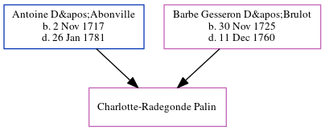

Charlotte-Radegonde Palin c1746 -
[ Home ] | [ Calendar ] | [ Surnames Index ] | [ Census Index ] | [ Family History ]The child of Antoine D'Abonville and Barbe Gesseron D'Brulot, Charlotte-Radegonde Palin was baptized in Québec on 14 Mai 1746.
Parents
- Antoine was born on Nov 2, 1717
- Barbe Elizabeth was born on Nov 30, 1725
Family Tree
Generated by ged2site. Last updated on Jun 6, 2024